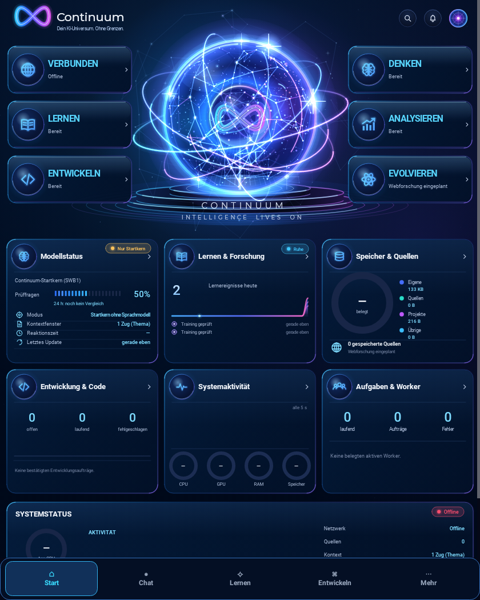
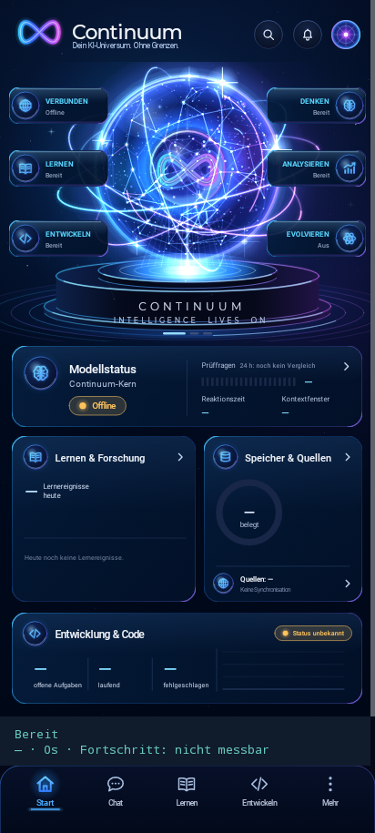
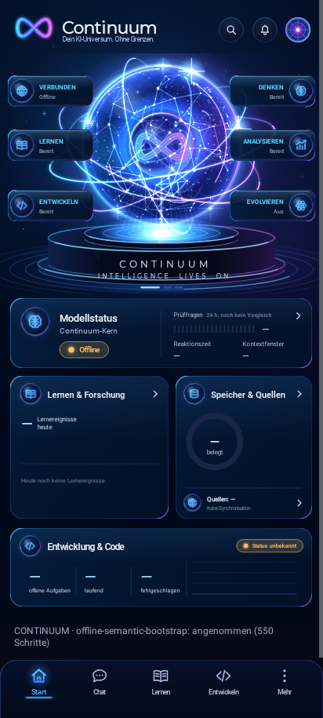

Der abgeschnittene Ringrand im Fold-Hochformat ist behoben. Avatarfläche und Schaltflächen behalten ihre Positionen. Der technische Bereitschaftsbalken wurde entfernt; echte Arbeits- und Fehlerzustände bleiben sichtbar. Dieselben drei gezielten Tests wechseln von 1 PASS/2 FAIL auf 3 PASS; die drei vollständigen Layoutfälle bestehen ebenfalls.
Die Aufnahmen zeigen den originalen Orb unter nativer Host-Canvas-Grafik, keinen Fold7 und keine Filament-Kopfaufnahme. Die sichtbaren Startwerte variieren während echter asynchroner Initialisierung. Auf dem Telefon bleibt eine reale technische Bootstrap-Meldung sichtbar. Daher keine Behauptung vollständiger visueller Übereinstimmung.


